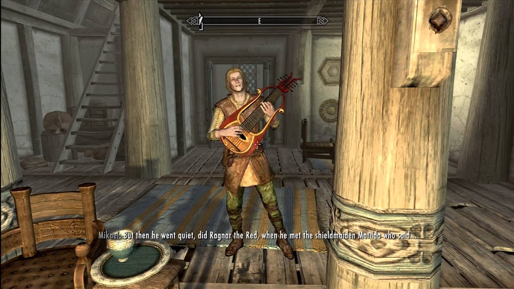
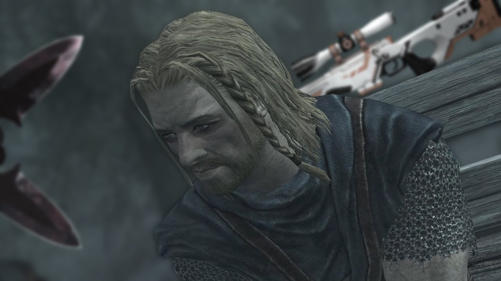
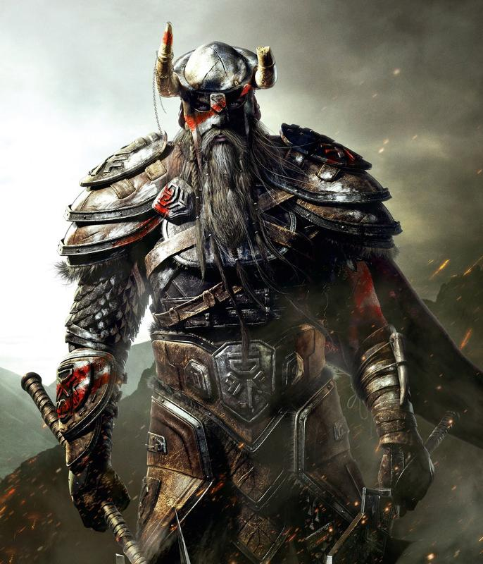

Жил да был Рагнар Рыжий — героем он слыл, как-то раз он в Вайтран ненадолго прибыл.
Он куражился, пыжился, бряцал мечом, похваляясь, что враг ему всяк нипочём!
Но вдруг Рагнар Рыжий как лютик поник, он услышал Матильды насмешливый крик…
«Что блажишь ты, что врёшь, что ты мёд здесь наш пьёшь?! С нас довольно, готовься — сейчас ты умрёшь!»
Лязг стали о сталь беспрестанно звенел, и Матильды воинственный дух пламенел!
И унял с тех пор Рагнар хвастливую реееееечь… как слетела башка его рыжая с плеч!

Норды или нордлинги — человеческая раса, высокий, бледнокожий и светловолосый народ. Родина нордов — Скайрим (прародина
— Атмора). Сильные и суровые, норды знамениты своей устойчивостью к морозу. Из них получаются очень хорошие воины.
Бытует малообоснованный стереотип, что норды не очень умны. Действительно, они часто могут быть безграмотными, грубыми и
малоприятными в общении, но всё это вовсе не от предполагаемых малых умственных способностей, а вследствие их, в
некотором роде, варварской культуры.

Норды исповедуют различные религиозные культы и течения, в этом вопросе единства нет. Хотя основная часть нордского
народа исповедует культ имперских божеств с уклоном в почитание Талоса, среди них встречаются также язычники,
поклоняющиеся прежним богам, и даэдропоклонники. Верой нордов Солстхейма — скаалов — является анимизм.
Некоторые норды обладают особым даром — магией голоса, ту'умом. Способные к этому виду вербальной магии зовутся Языками
и являются самой мощной боевой силой нордов. Крики Языков могут воздействовать на внешний мир по-разному в зависимости
от целей использования того или иного Крика. Так, некоторые Крики могут причинить повреждения врагам или же отбросить их
и повернуть ход сражения вспять.